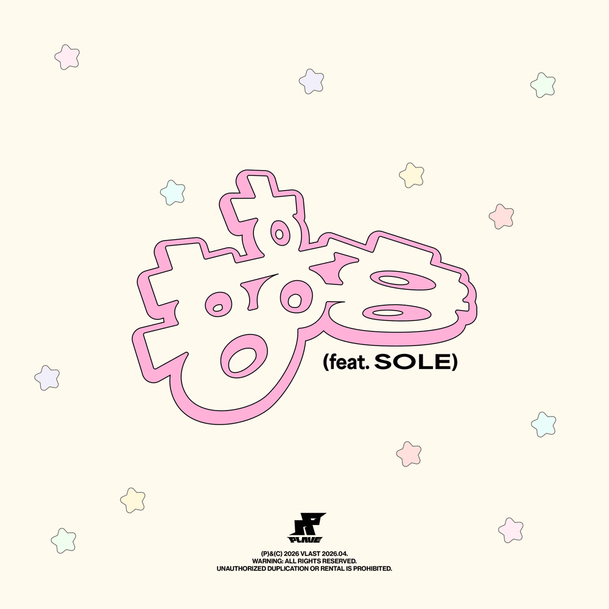

Syair Lagu |
HMPH!PLAVE Feat. SOLE
주말에 피곤하다면서 넌 오늘 약속을 미뤘어
조금은 화가 났지만서도 귀여워 내가 참았어
항상 이런 식이야 (뭐가?)
뭐긴 잘 생각해 봐 (뭘까?)
스무고개 하잔 거야, 뭐야 정말로
한 고개 너머 두 고개 너머 셋
네 고개 지나 열 고개 스물, 땡
한숨이 나와, 한숨이 나와
잠깐 타임, 얘기 좀 해볼까?
대화가 필요한 것 같은데 조용하기만 해, 왜?
비행기 타임, 무슨 말 좀 해봐
왜 내게만 보채
지금 자존심 부리니
삐지면 흥흥흥, 흥흥흥 하루에 대체 몇 번 삐져?
나도야 흥흥흥, 흥흥흥 이번엔 나도 질 수 없어
눈물이 유유유, 유유유, 토라진 내 맘도 몰라
흥흥흥, 흥흥흥, 내 말 좀 들어봐
서로가 서로를 몰라 띄워 물음표
며칠 전 봤던 예쁜 너의 웃음꽃
보고파 난 오늘도 내일도 모레도
내 맘은 도돌이표
아슬아슬 닿을 듯 말 듯 해 림보
건드릴까 무서워 뾰루퉁 심보
Turn left, turn right
피하고 있는 중 umm-umm
한 고개 너머 두 고개 너머 셋
네 고개 지나 열 고개 스물, 땡
한숨이 나와 한숨이 나와
잠깐 타임 얘기 좀 해볼까
대화가 필요한 것 같은데 조용하기만 해, 왜?
비행기 타임 무슨 말 좀 해봐
왜 내게만 보채
지금 자존심 부리니
삐지면 흥흥흥, 흥흥흥 하루에 대체 몇 번 삐져?
나도야 흥흥흥, 흥흥흥 이번엔 나도 질 수 없어
눈물이 유유유, 유유유, 토라진 내 맘도 몰라
흥흥흥, 흥흥흥, 내 말 좀 들어봐
|